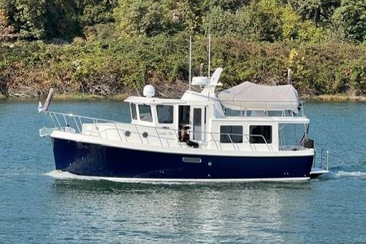

B-Atlas Boat Guide · AMTG-395
American Tug 395
From 2011
The American Tug 395 is a Lynn Senour-influenced raised-pilothouse semi-displacement cruiser built for efficient coastal passagemaking. It combines a single-diesel shaft layout, protected running gear, wide working decks and couple-oriented accommodations with substantially more beam and displacement than trailerable tug-style cruisers.

- LOA
- 41.5 ft
- LWL
- 36.4 ft
- Beam
- 13.25 ft
- Draft
- 3.42 ft
- Hull behaviour
- Semi-Displacement
- Fuel
- Diesel
- Propulsion
- Shaft
- Engine configuration
- Single Cummins 380 or 550 diesel inboard
- Boat family
- Tug
- Construction
- Fiberglass
Best for
- Couples planning extended coastal or Great Loop cruising
- Owners prioritizing pilothouse visibility, tankage and robust deck access
- Buyers comfortable with conventional yacht-scale storage and maintenance
Trade-offs
- Beam and displacement require conventional marina, haul-out and storage infrastructure
- Single engine provides no second-engine propulsion redundancy
- More complex and costly to own than trailerable pocket cruisers
Known concerns
- No model-specific concern has been promoted to B-Atlas’s evidence threshold. This does not mean the model has no age-, condition- or hull-specific risks.
Inspection focus
- Confirm exact 34/365 naming and model year from HIN and factory records
- Inspect engine, cooling, exhaust, shaft, rudder and full-length keel/running gear
- Inspect pilothouse doors, windows, deck hardware and cored structures for leakage
- Inspect fuel, water, waste, generator and electrical systems and verify tank condition
Continue researching
Related boat models
American Tug 365
36.5 ft · Semi-Displacement
American Tug 34
34.42 ft · Semi-Displacement
Nordic Tugs 37
38.92 ft · Semi-Displacement
Nordic Tugs 39
38.92 ft · Semi-Displacement
Nordic Tugs 42
44.67 ft · Semi-Displacement
Ranger Tugs R-43 CB Command Bridge
46.75 ft · Planing
About this record
B-Atlas preserves uncertainty: missing information remains unknown rather than being treated as a negative. Specifications and guidance describe the model record; individual boats can differ by year, equipment, refit and condition.